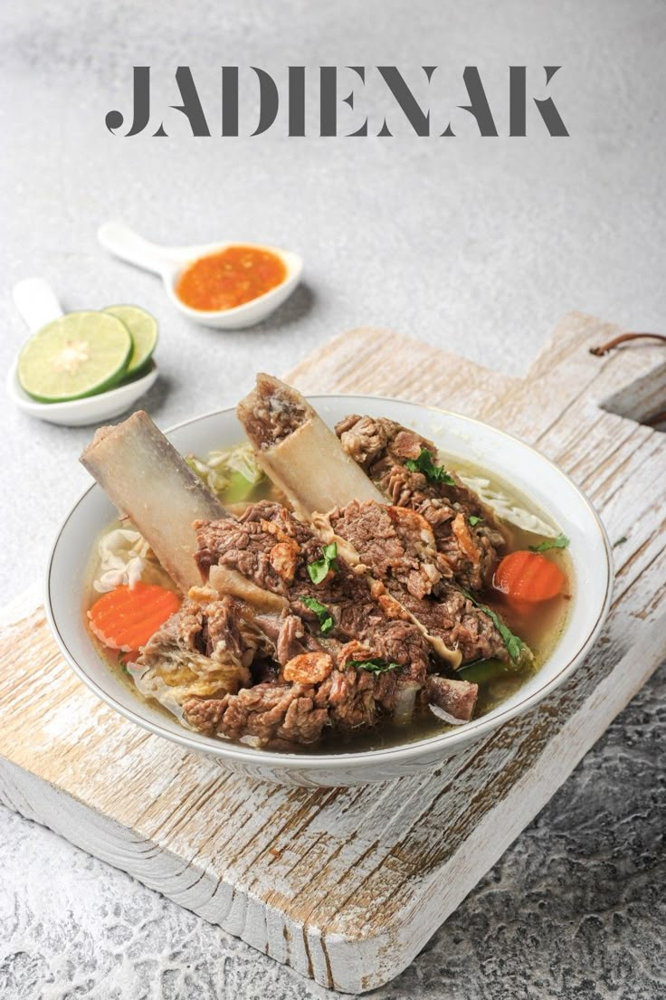
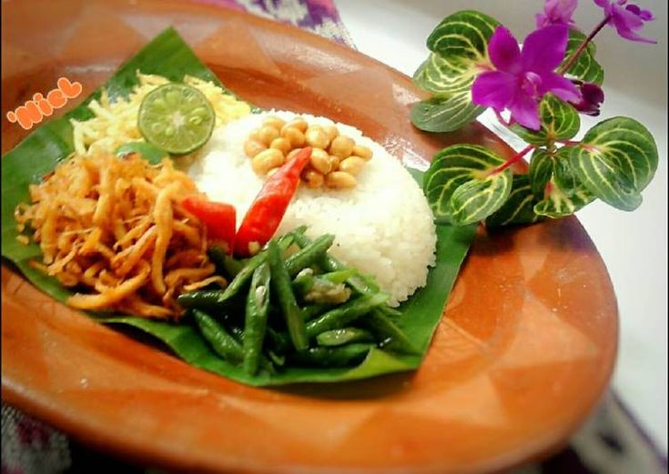

Ayam Taliwang
Ayam Taliwang adalah makanan khas Lombok yang terkenal dengan rasa pedas dan bumbu yang kaya rempah. Biasanya disajikan dengan plecing kangkung dan nasi putih hangat, menjadikannya menu wajib dicoba bagi wisatawan.
Bebalung
Bebalung adalah masakan khas Lombok berupa sup tulang iga sapi, kerbau, atau kambing yang dimasak dengan bumbu rempah tradisional. Hidangan ini memiliki cita rasa gurih dan sedikit pedas. Biasanya disajikan panas bersama nasi putih, dipercaya dapat menambah stamina tubuh.


Nasi Balap Puyung
Nasi Balap Puyung adalah makanan khas Lombok dengan cita rasa pedas dan gurih. Terdiri dari nasi putih, ayam suwir pedas, kacang kedelai goreng, sambal, dan pelengkap lain seperti tempe atau telur. Awalnya berasal dari Desa Puyung di Lombok Tengah.